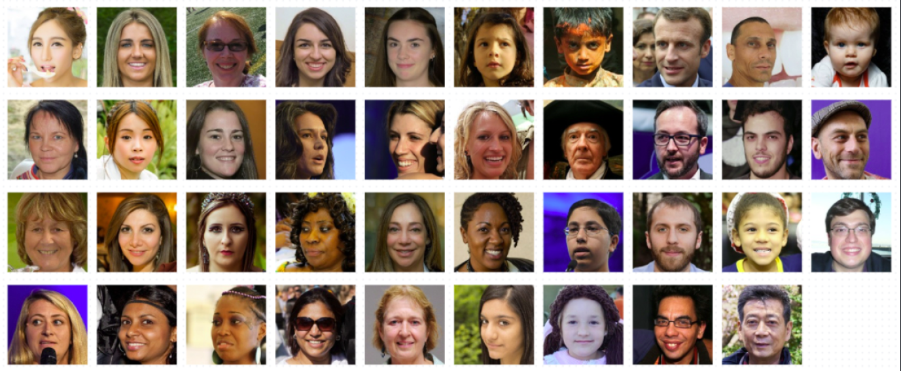
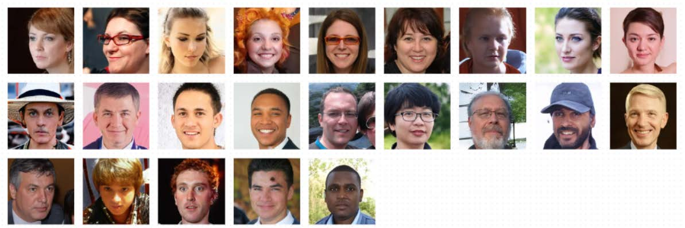
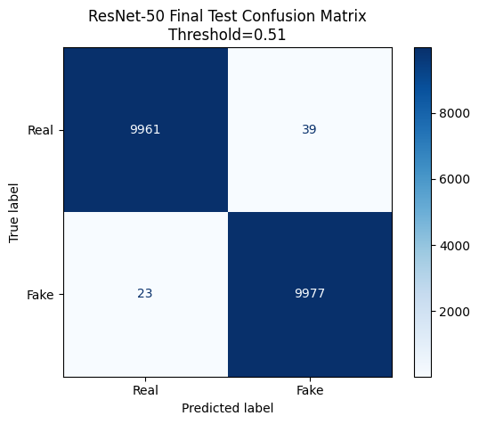
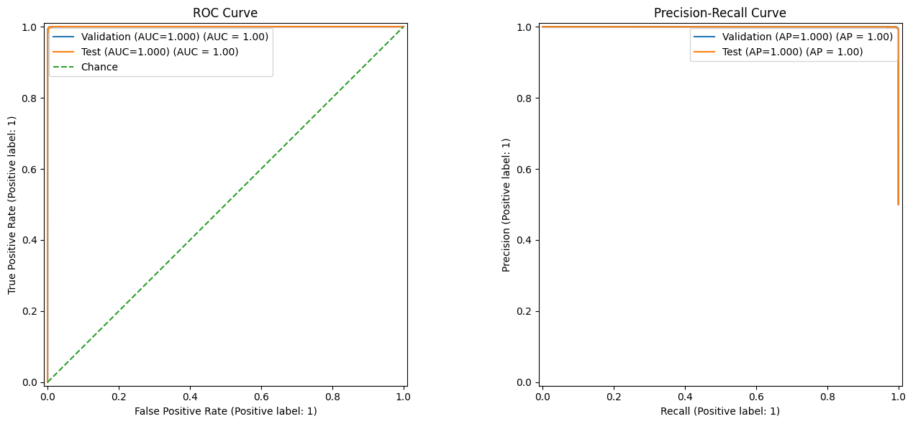
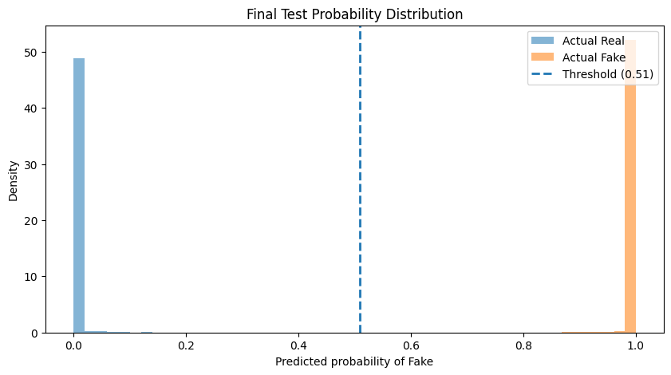

19,938 / 20,000 correct
Final Test Performance · Locked Benchmark
20,000 images.
62 mistakes.
The final ResNet-50 correctly classified 19,938 of 20,000 held-out images in the balanced FFHQ vs. StyleGAN benchmark. The test set stayed locked until development decisions were complete.
Precision + recall balance
0.99995 ranking performance
Selected using validation data
Error analysis
What did the model get wrong?
Of 20,000 held-out test images, the model misclassified 62: 39 real images were flagged as synthetic and 23 synthetic images were classified as real.
False positives
Real faces classified as synthetic

A false positive incorrectly flags an authentic image. In real-world use, this type of error could undermine trust in legitimate content.
False negatives
Synthetic faces classified as real

A false negative allows a synthetic image to pass without being flagged. This is one reason the detector should be treated as a screening signal rather than proof of authenticity.
Derived test confusion matrix
The errors were small, but they still carry weight.
Of 10,000 real images, 39 were incorrectly flagged as synthetic. Of 10,000 synthetic images, 23 were incorrectly labeled real. That leaves 9,961 true negatives and 9,977 true positives.
Real → Synthetic39false positives | Type 1 Error
Synthetic → Real23false negatives | Type 2 Error
Why that matters: false positives can damage trust in authentic content, while false negatives can create a false sense of security.

Performance across thresholds
The benchmark classes separated extremely cleanly.
ROC–AUC summarizes ranking performance across many thresholds rather than accuracy at a single threshold. The test probability distribution shows most examples pushed strongly toward the correct end of the scale.


Interpretation
Excellent on this benchmark. Not universal authentication.
The model learned one benchmark built primarily from FFHQ real faces and StyleGAN-generated synthetic faces. Performance should not automatically be extended to diffusion models, face swaps, video, screenshots, aggressive compression, or future generators.